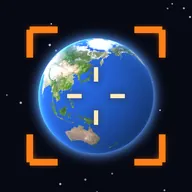
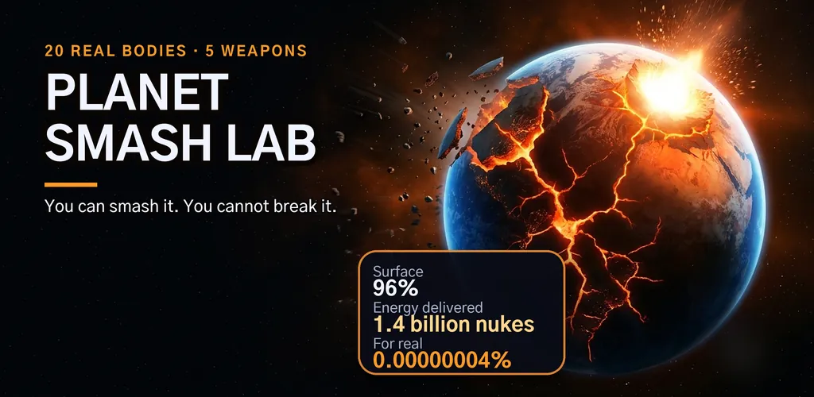
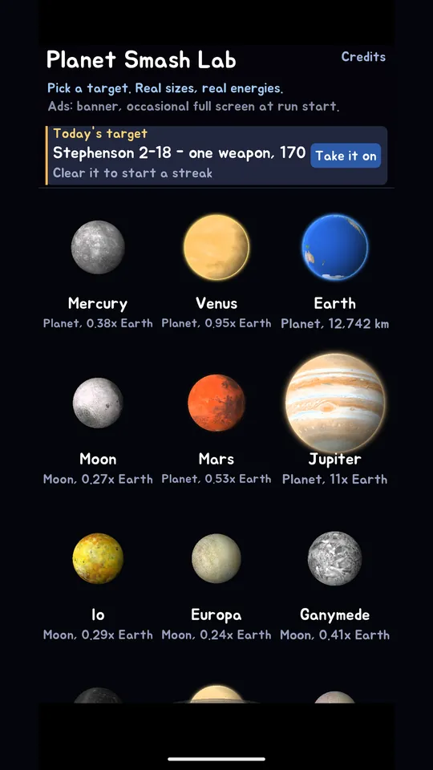
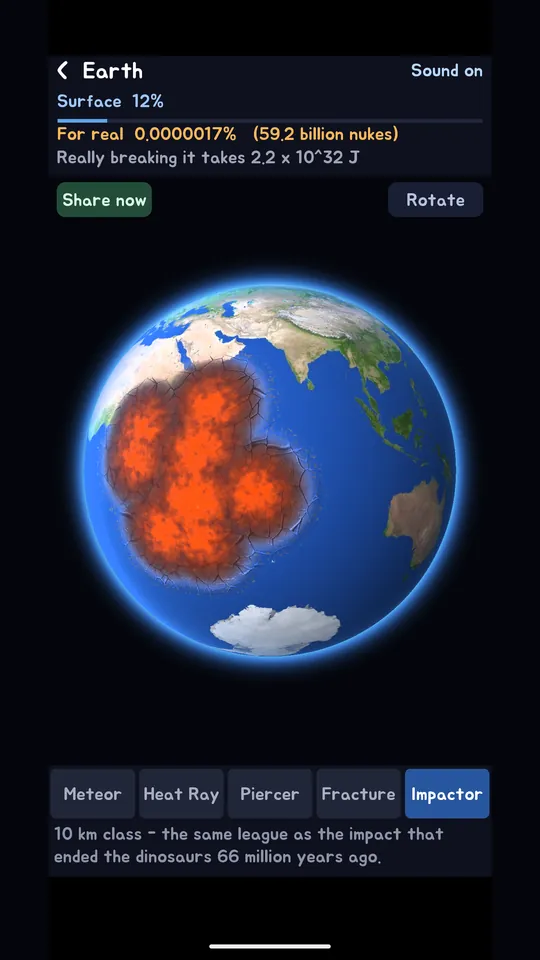
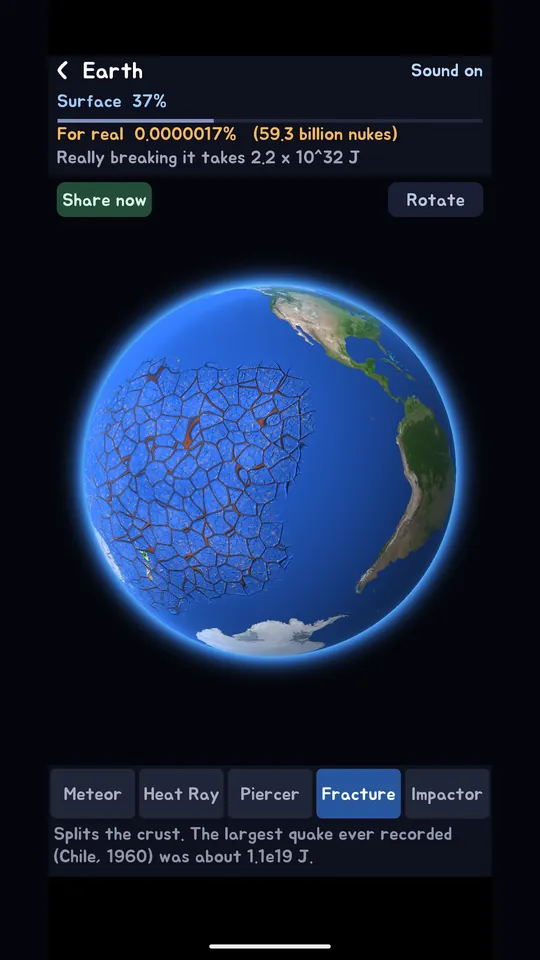
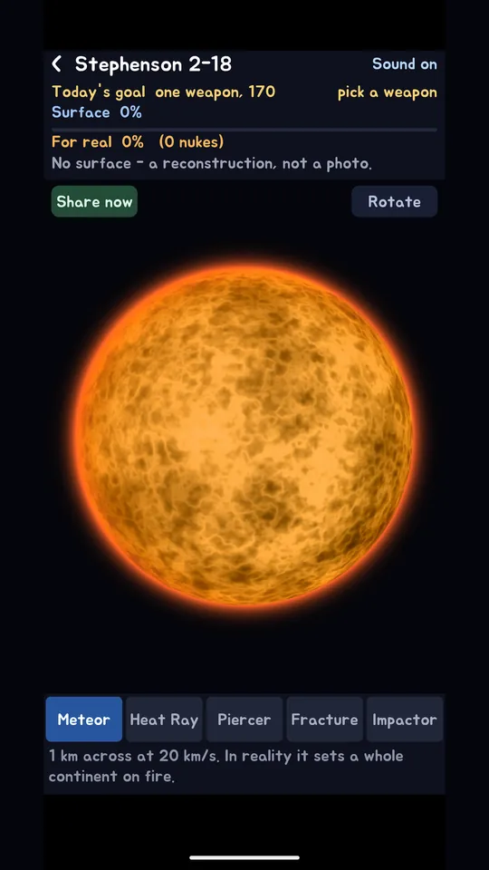
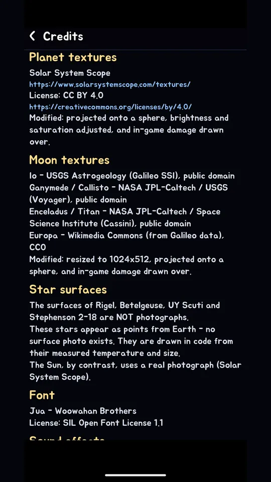

Planet Smash Lab: Destruction
Smash 20 real planets and stars with 5 weapons. Offline planet destruction sim.






About this app
You just spent an hour grinding 100% of Earth's surface away. Earth is still turning, perfectly fine.
Planet Smash Lab is a planet destruction game built on real celestial bodies. The sphere in the middle of your screen is not a decorative marble. It is Mercury, Venus, Earth, Mars, Jupiter, Saturn, Uranus and Neptune, plus the Moon, Io, Europa, Ganymede, Callisto, Enceladus and Titan, plus the Sun, Rigel, Betelgeuse, UY Scuti and Stephenson 2-18. Twenty in total, all unlocked from the first launch.
Five weapons that break things in five different ways
The Meteor digs craters. The Heat Ray melts the crust into lava. The Piercer punches holes clean through. The Fracture splits the crust apart. The Impactor erases a continent in one shot. These are not recolours of the same attack: each one writes to a different damage channel, so the marks it leaves look and behave differently.
The "what if it were real" gauge
Every hit moves two numbers at once. One is surface destruction. The other is real destruction: the energy you delivered divided by the body's gravitational binding energy. Hammer Earth with the Impactor as long as you like and that second number sits near 0.0000001% and refuses to move. The energy you deliver is also shown as a count of nuclear bombs, so the scale is readable. The screen shatters, reality shrugs. That gap is the whole joke, and the whole science.
What is left when you finish
Push surface destruction past 100% and the body collapses. What remains depends on what you broke: rocky worlds leave debris, while the largest stars go supernova and leave a neutron star or a black hole.
Daily target
Every day brings one body and one goal: collapse it within 25 seconds, finish under 80 shots, break it without the strongest weapon, or break it using only one weapon. The limits scale with the body, because a small moon and a hypergiant should not be the same job. Clear it and your streak goes up.
What this game does not have
No progression locks. No wait timers. No weapon or planet hidden behind an ad. All five weapons and all twenty bodies are available from the moment you install. Everything works offline.
Where the numbers come from
Radii and masses are NASA published fact sheet values, and gravitational binding energy is calculated from them. Each weapon carries a one line source for its energy figure. Texture attribution is available in the app's Credits screen.
Notes
- Star surfaces (Rigel, Betelgeuse, UY Scuti, Stephenson 2-18) are reconstructions from observed temperature and size, not photographs. No photographs of those surfaces exist.
- Figures are approximations from public data, for education and entertainment.
- No real country or city is targeted, and no casualties are represented.
- Free with ads: a banner, and an occasional interstitial when a run starts. A rewarded ad is offered only if you want one extra attempt at a failed daily target, and skipping it simply means trying again tomorrow.
Android · free with ads · Developer: RealTunaLove · Store listing in 17 languages
Background story: why I built it